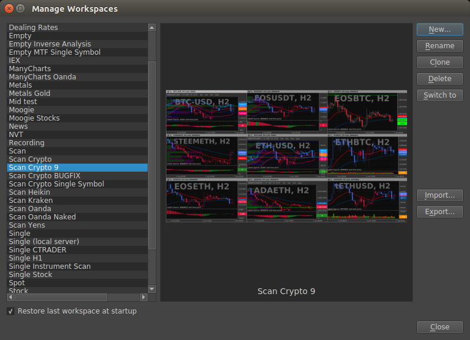

Workspace Basics¶
Workspace overview¶
The arrangement of charts (and other panes) is called a workspace. You can create any number of workspaces and switch between them quickly.
Rename or duplicate a workspace¶
Choose File > Workspace > Manage Workspaces.
- Do any of the following, and then click Close:
To rename a workspace, select it, and click the Rename button, and edit the text.
To duplicate a workspace, select it, and click the Clone button.
Save and switch workspaces¶
Save a custom workspaces¶
Choose File > Workspace > New Workspace.
Type a name for the workspace.
When a new workspace is created it duplicates the active workspace and saves it under the new name.
Display or switch workspaces¶
Choose File > Workspace > ‘Workspace Name’.
When switching workspaces, the workspace your switching from is automatically saved.
Delete a custom workspaces¶
Choose File > Workspace > Manage Workspaces.
Select the workspace, and click the Delete button.
Revert a saved workspace arrangement¶
To revert an individual workspace, choose File > Workspaces > Revert ‘Workspace Name’.
Reverting a workspace reopens the previously saved version of that workspace.